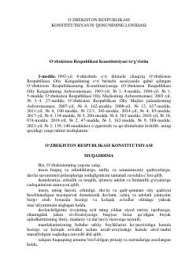

YKOʻzbekiston Respublikasi Konstitutsiyasining yangi tahriridagi matni va asosiy prinsiplari.
Mazkur hujjat Oʻzbekiston Respublikasi Konstitutsiyaviy qonuni loyihasi hamda mamlakat asosiy qonunining yangi tahriridagi moddalarni oʻz ichiga oladi. Unda davlat suvereniteti, xalq hokimiyatchiligi, konstitutsiya va qonunning ustunligi kabi fundamental prinsiplar belgilab qoʻyilgan.